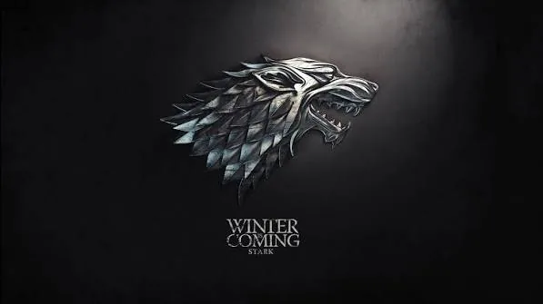
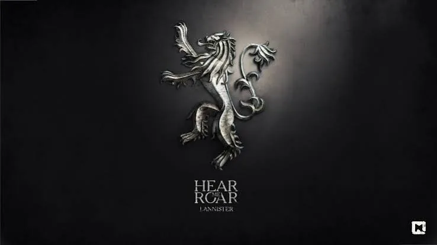
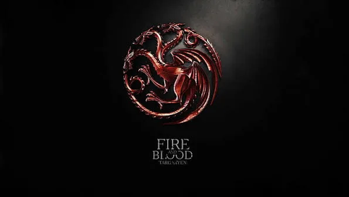
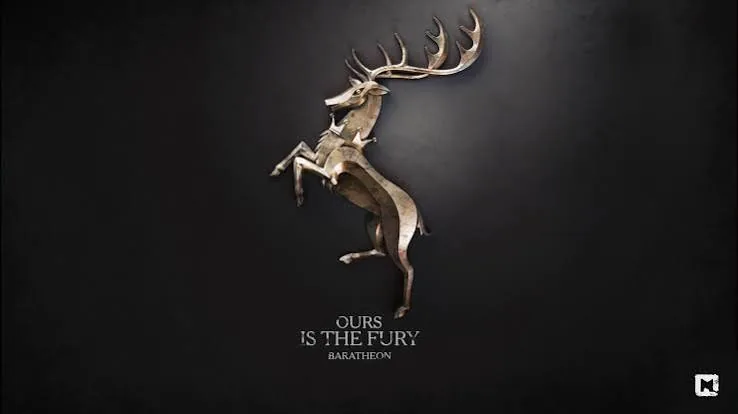
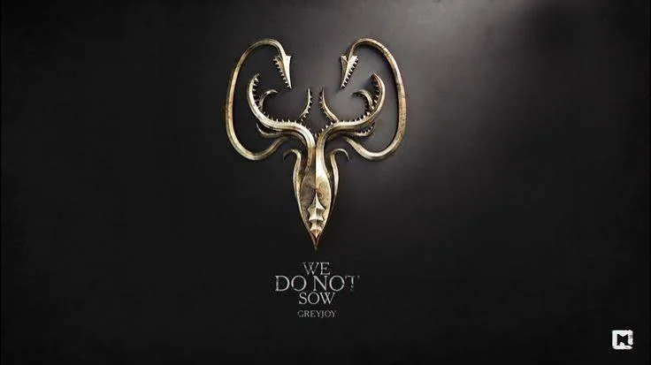
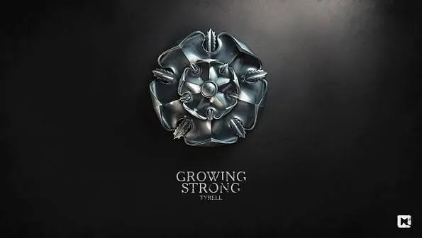
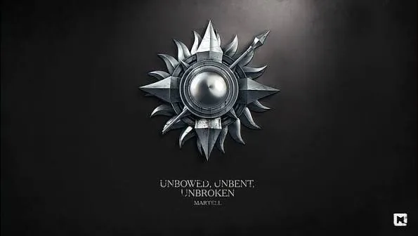
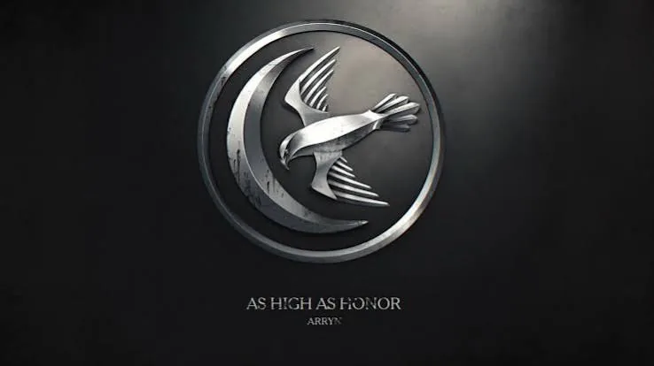
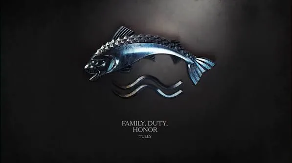

Tilt each sigil. Every house rose on something different — ice, gold, fire, faith, or the sea — and every house paid for it eventually.
No matching entries found.

House Stark
"Winter is Coming"
The North
Rulers of the North for thousands of years, the Starks measure loyalty in blood and cold in centuries. Their sigil, a running direwolf, marks a family that keeps its word even when keeping it costs everything — and it usually does.
Seat: Winterfell

House Lannister
"Hear Me Roar"
The Westerlands
The richest family in the Seven Kingdoms, and rarely shy about reminding you. Gold from Casterly Rock bought them armies, marriages, and the throne itself — though never quite the loyalty that gold can't purchase.
Seat: Casterly Rock

House Targaryen
"Fire and Blood"
Dragonstone (originally)
The only family that ever tamed a dragon and rode it into history. They united a continent by burning parts of it first, then ruled for three hundred years before losing the one thing dragons can't fix: everyone's patience.
Seat: Dragonstone / King's Landing

House Baratheon
"Ours is the Fury"
The Stormlands
Forged in rebellion, the Baratheons took the throne with a war hammer and kept it with a great deal of wine. A house of storm lords who were never quite as comfortable sitting still as they were charging forward.
Seat: Storm's End

House Greyjoy
"We Do Not Sow"
The Iron Islands
Iron Islanders who never trusted the mainland's idea of ownership — why grow something when you can take it by longship? Salt, drowned gods, and old grudges keep this house afloat, sometimes barely.
Seat: Pyke

House Tyrell
"Growing Strong"
The Reach
Highgarden's rulers understood something the sword-houses often forgot: you can win a lot of wars with grain, gold, and a well-placed marriage. Their patience outlasted several kings, right up until it didn't.
Seat: Highgarden

House Martell
"Unbowed, Unbent, Unbroken"
Dorne
The one kingdom that was never conquered by fire or by force — Dorne married its way out of a Targaryen invasion instead. Sun, spears, and a very long memory for old wrongs.
Seat: Sunspear

House Arryn
"As High as Honor"
The Vale
Tucked behind a mountain range so brutal that armies simply stopped trying, the Vale sat out most of the realm's wars by the simple trick of being extremely hard to reach.
Seat: The Eyrie

House Tully
"Family, Duty, Honor"
The Riverlands
Riverlords sitting at the crossroads of every war that ever passed through Westeros — which meant they bled for practically everyone else's ambitions, over and over again.